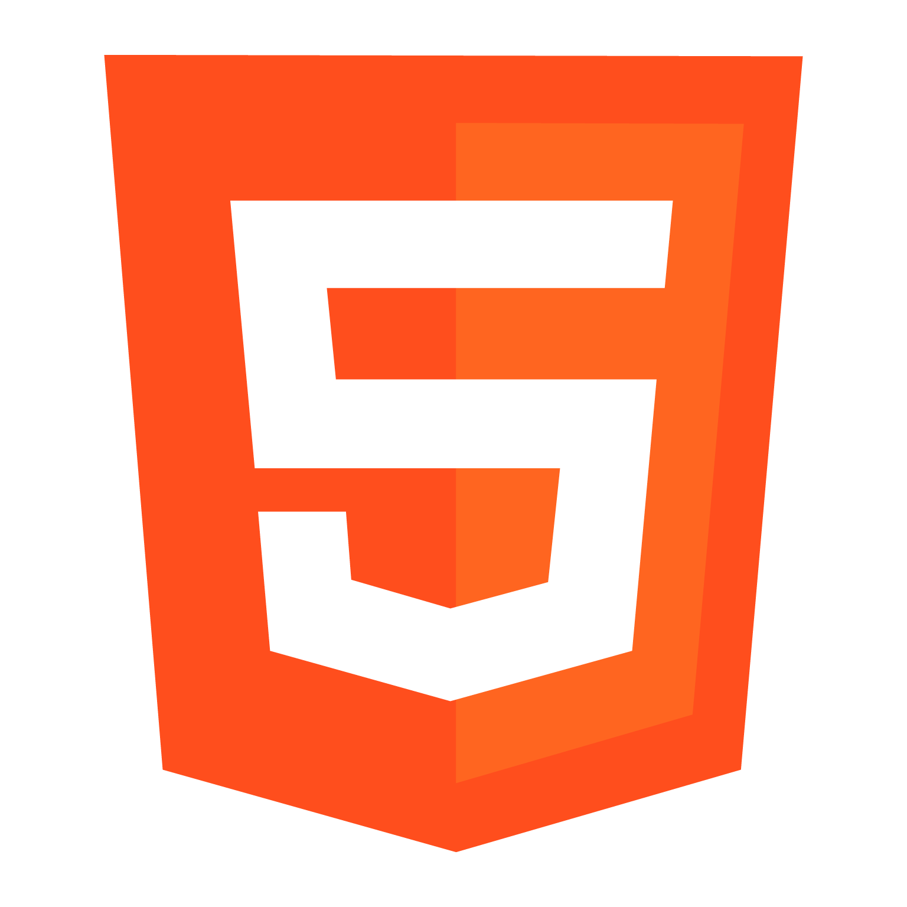
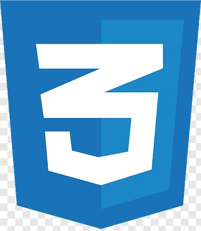
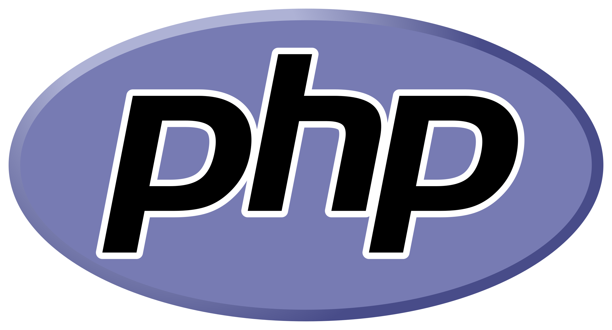
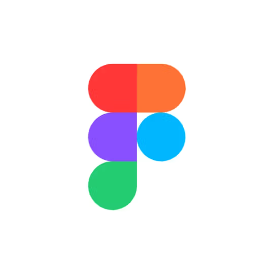

Olá!
Um pouco sobre mim:
Sou desenvolvedora apaixonada por transformar ideias em código. Trabalho com tecnologias como HTML, CSS, JavaScript, PHP e mais, criando soluções web criativas e funcionais.
Conhecimentos




